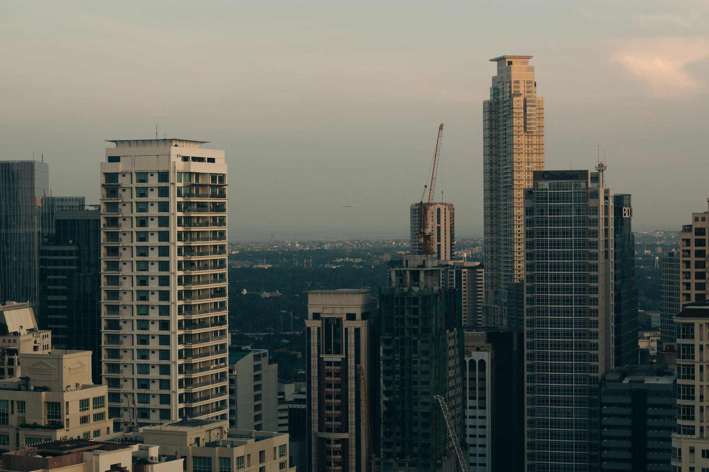

BTree
Home
Topics
About

On July 4, 1946
when the Philippines gained its independence from the United States, the Bureau was eventually re-established separately.
Ferdinan Marcos Admiristration
The appointment of Misael Vera as Commissioner in 1965 led the Bureau to a "new direction" in tax administration. The most notable programs implemented were the "Blue Master Program" and the "Voluntary Tax Compliance Program".
Cory Aquino Administration
After the People's Revolution in February 1986, a renewed thrust towards an effective tax administration was pursued by the Bureau. "Operation: Walang Lagay" was launched to promote the efficient and honest collection of taxes.
Ramos Administration
The year 1993 marked the entry into the Bureau of its first lady Commissioner, Liwayway Vinzons-Chato. In order to attain the Bureau's vision of transformation, a comprehensive and integrated program known as the ACTS or Action-Centered Transformation Program.
Estrada Administration
With the advent of President Estrada's administration, a Deputy Commissioner of the BIR, Beethoven Rualo, was appointed as Commissioner of Internal Revenue. Under his leadership, priority reform measures were undertaken to enhance voluntary compliance and improve the Bureau's productivity.
Arroyo Administration
Following the momentous events of EDSA II in January 2001, newly-installed President Gloria Macapagal-Arroyo appointed a former Deputy Commissioner, Atty. René G. Bañez, as the new Commissioner of Internal Revenue.
P-Noy Aquino Administration
Following the highly-acclaimed inauguration of President Benigno C. Aquino III on June 30, 2010, a former BIR Deputy Commissioner, Atty. Kim S. Jacinto-Henares, was appointed as the new Commissioner of Internal Revenue.
Duterte Administration
On December 19, 2017, President Rodrigo Duterte signed the Tax Reform for Acceleration and Inclusion (TRAIN) Law, wherein it exempts all taxpayers, whose annual income is less than or equal to Php 250, 000, to pay their taxes.
 BTree
BTree